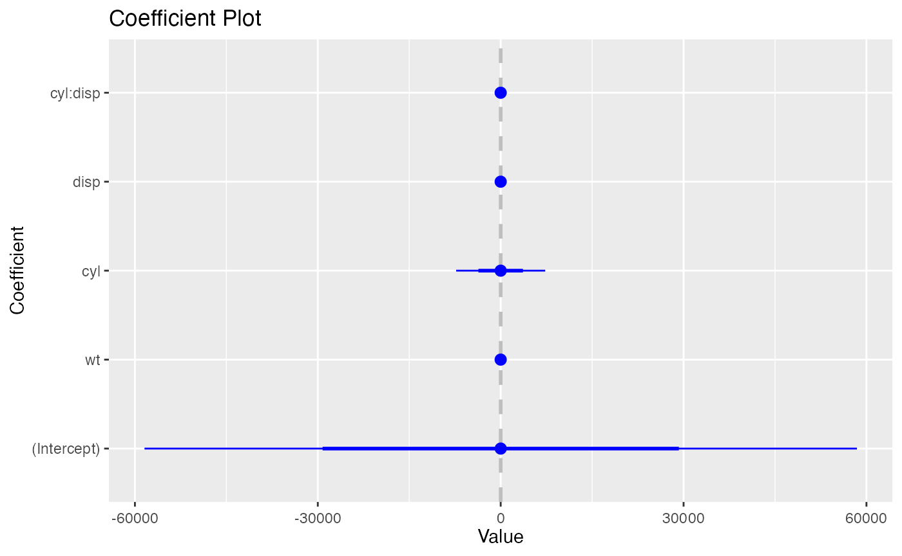

Using `coefplot`
coefplot.Rmd
library(coefplot)
#> Loading required package: ggplot2
coefplot()
coefplot provides S3 Methods for lm,
glm, workflows, model_fit,
rxGlm, rxLinMod, and rxLogit
objects. These methods take the same arguments as the default
coefplot() method.

coefplot.glm()
glm_model <-
glm(
mpg > 15 ~ wt + cyl*disp,
data = mtcars,
family = binomial(link = "logit")
)
coefplot(glm_model)
coefplot(glm_model, trans = invlogit)
coefplot.workflow()
coefplot.workflow() plots the coefficients of a fitted
workflows::workflow() object. Bceause this example is
started with a workflows::workflow() call, it has the
workflow class and thus uses
coefplot.workflow().
workflows::workflow() |>
workflows::add_formula(mpg ~ wt + cyl*disp) |>
workflows::add_model(parsnip::linear_reg()) |>
parsnip::fit(mtcars) |>
coefplot()
coefplot.model_fit()
While coefplot.model_fit() passes directly from
parsnip::fit() to coefplot() like in the
example for coefplot.workflow(), because this example is
contained entirely within parsnip calls, it has the class
model_fit.
parsnip::linear_reg() |>
parsnip::set_engine('lm') |>
parsnip::fit(mpg ~ wt + cyl*disp, data = mtcars) |>
coefplot()